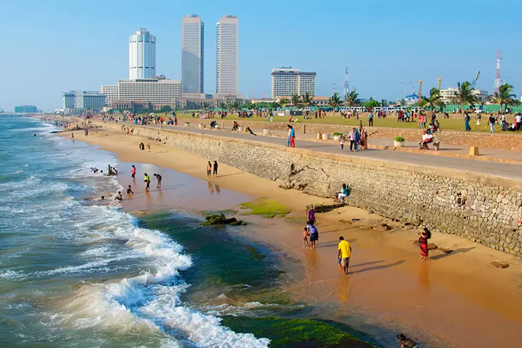

Kathiresan Pillayar temple
Built more than a hundred years ago, Kathiresan Pillaiyar Temple is an old temple which is dedicated to the war god of Hindu mythology God Murugan or Skanda. The temple is located on Galle Road in Colombo in Sri Lanka and is well known for its separate shrines dedicated to various deities and unique architecture which adorns colorful images of various gods of Hindu legend. Visitors can. Several vendors can also be seen selling garlands and several expensive ornaments for deities
Built more than a hundred years ago, Kathiresan Pillaiyar Temple is an old temple which is dedicated to the war god of Hindu mythology God Murugan or Skanda. The temple is located on Galle Road in Colombo in Sri Lanka and is well known for its separate shrines dedicated to various deities and unique architecture which adorns colorful images of various gods of Hindu legend. Visitors can. Several vendors can also be seen selling garlands and several expensive ornaments for deities

Colombo Fort
The Fort area in Colombo has a busy harbor, the stock exchange, and the World Trade Centre, which is the country's biggest building. Apart from that, this area is rich in political and cultural heritage. However, due to the turmoil of the Civil War, large parts of it are shut down. Nevertheless, this dynamic district offers everything from food and heritage to nightlife and casinos.
The Fort area in Colombo has a busy harbor, the stock exchange, and the World Trade Centre, which is the country's biggest building. Apart from that, this area is rich in political and cultural heritage. However, due to the turmoil of the Civil War, large parts of it are shut down. Nevertheless, this dynamic district offers everything from food and heritage to nightlife and casinos.
Pettah market
The Pettah Market or Manning Market is an open market in the suburb of Pettah in the city of Colombo, Sri Lanka. Being one of Colombo's busiest places, the area may seem a little chaotic at first glance but if you know what to get on which street then you are going to walk out with some cool stuff at surprisingly low prices. One can find a wide range of goods right from electronics to fashion accessories and market vendors selling anything from fresh vegetables, fruits to meat and seafood.
The Pettah Market or Manning Market is an open market in the suburb of Pettah in the city of Colombo, Sri Lanka. Being one of Colombo's busiest places, the area may seem a little chaotic at first glance but if you know what to get on which street then you are going to walk out with some cool stuff at surprisingly low prices. One can find a wide range of goods right from electronics to fashion accessories and market vendors selling anything from fresh vegetables, fruits to meat and seafood.

Galle face green
The Galle Face Green is a beautiful beach park that covers an area of almost five hectares and is in the fort area of Sri Lanka's capital, Colombo. Enjoy yourself and forget the worries of your day by indulging in a vast span of activities like kite flying, fishing, football, beach volleyball, jogging, or just taking a relaxing stroll by the beach.
The Galle Face Green is a beautiful beach park that covers an area of almost five hectares and is in the fort area of Sri Lanka's capital, Colombo. Enjoy yourself and forget the worries of your day by indulging in a vast span of activities like kite flying, fishing, football, beach volleyball, jogging, or just taking a relaxing stroll by the beach.

Gangaramaya temple
The Gangaramaya Temple is a unique blend of architecture and culture and a place for Buddhist learning and worship. It also effectively takes part in social welfare. It was built first in the 19th century and started by the famous scholar-monk Hikkaduwa Sri Sumangala Nayaka Thera. The temple is a unique blend of architectural styles from Sri Lanka, Thailand, Chinese, and India.
The Gangaramaya Temple is a unique blend of architecture and culture and a place for Buddhist learning and worship. It also effectively takes part in social welfare. It was built first in the 19th century and started by the famous scholar-monk Hikkaduwa Sri Sumangala Nayaka Thera. The temple is a unique blend of architectural styles from Sri Lanka, Thailand, Chinese, and India.

National Museum of Colombo
The National Museum of Colombo is a two-story building that is the largest museum in Sri Lanka. It dates back to 1877 and has a colonial vibe with a rich history covering 2500 years. The founder of the museum was William Henry Gregory, British Governor of Ceylon from 1872–1877. The building’s artworks have an essence of the Dutch, Portuguese and British Colonial times, along with the display of significant ancient and local artifacts, farming methods, tools, and traditional craft. The museum’s construction is very well planned out and easy to navigate through the corridor and the guards guide you to the various galleries.
The National Museum of Colombo is a two-story building that is the largest museum in Sri Lanka. It dates back to 1877 and has a colonial vibe with a rich history covering 2500 years. The founder of the museum was William Henry Gregory, British Governor of Ceylon from 1872–1877. The building’s artworks have an essence of the Dutch, Portuguese and British Colonial times, along with the display of significant ancient and local artifacts, farming methods, tools, and traditional craft. The museum’s construction is very well planned out and easy to navigate through the corridor and the guards guide you to the various galleries.
Viharamahadevi park
Located in the busy and crowded city of Colombo is the beautiful Viharamahadevi Park. This gorgeous park is located quite close to the National Museum and is one of the biggest and oldest parks of Sri Lanka. The park also offers breathtaking views of sunrise and sunset for a truly memorable experience. The Viharamahadevi Park was initially known as the Victoria Park and was renamed after the mother of King Dutugemunu.
Located in the busy and crowded city of Colombo is the beautiful Viharamahadevi Park. This gorgeous park is located quite close to the National Museum and is one of the biggest and oldest parks of Sri Lanka. The park also offers breathtaking views of sunrise and sunset for a truly memorable experience. The Viharamahadevi Park was initially known as the Victoria Park and was renamed after the mother of King Dutugemunu.

Beira lake
One of the most famous landmarks in Sri Lanka is Beira Lake, which is in the developed capital city of Colombo. Beira Lake is a quiet escape into the serene slumber of the splendid city, which makes it a great place to relax, and it is recommended for couples. During the colonial era of the Portuguese, Dutch and the English the lake was used for a wide variety of purposes. It still retains its Portuguese name. It is connected to many intricate canals which provided an easy way of transporting goods within the city and suburban cities.
One of the most famous landmarks in Sri Lanka is Beira Lake, which is in the developed capital city of Colombo. Beira Lake is a quiet escape into the serene slumber of the splendid city, which makes it a great place to relax, and it is recommended for couples. During the colonial era of the Portuguese, Dutch and the English the lake was used for a wide variety of purposes. It still retains its Portuguese name. It is connected to many intricate canals which provided an easy way of transporting goods within the city and suburban cities.

Colombo Dutch museum
The Colombo Dutch Museum is a beautiful two-story building which is a storehouse of some fantastic architecture and history of Dutch colonial rule of Sri Lanka. The Colombo Dutch museum was initially a residence of the Dutch governor- Thomas Van Rhee, and it was inside the walls of this museum that a treaty was signed with the Dutch.The building has been used for many different purposes over the years. It was a teacher training college and an institute for the instruction of clergymen between 1696 and 1796.
The Colombo Dutch Museum is a beautiful two-story building which is a storehouse of some fantastic architecture and history of Dutch colonial rule of Sri Lanka. The Colombo Dutch museum was initially a residence of the Dutch governor- Thomas Van Rhee, and it was inside the walls of this museum that a treaty was signed with the Dutch.The building has been used for many different purposes over the years. It was a teacher training college and an institute for the instruction of clergymen between 1696 and 1796.

World trade center
Colombo is famous for many old colonial buildings that clustered mostly in the old Fort area, and the most famous of them are the two iconic skyscrapers, the twin towers of the World Trade Center constructed within six years, i.e. from 1990-1996.
Colombo is famous for many old colonial buildings that clustered mostly in the old Fort area, and the most famous of them are the two iconic skyscrapers, the twin towers of the World Trade Center constructed within six years, i.e. from 1990-1996.

National Zoological garden
The National Zoological Garden of Sri Lanka is also known as the Colombo Zoo or the Dehiwala Zoo. This sprawling zoo is home to over 300 different species of animals, birds, reptiles, and fish from all over the world. All this makes it a popular destination for both locals and tourists. The National Zoological Garden of Sri Lanka stretches over an area of almost 30 acres. One of the main focuses of the zoo is to look after the conservation of the animals.
The National Zoological Garden of Sri Lanka is also known as the Colombo Zoo or the Dehiwala Zoo. This sprawling zoo is home to over 300 different species of animals, birds, reptiles, and fish from all over the world. All this makes it a popular destination for both locals and tourists. The National Zoological Garden of Sri Lanka stretches over an area of almost 30 acres. One of the main focuses of the zoo is to look after the conservation of the animals.

Kelaniya Raja maha vihara
Kelaniya Raja Maha Vihara is a Buddhist temple built in the 5th century. It is believed to have been visited by the Buddha on his third visit to the country along with 500 monks after the enlightenment of 8 years, back in 500 BCE. The temple holds the heritage designation of an Archaeological Protected Monument in Sri Lanka ever since 2007 thus holds great historical importance not only to Buddhists but also for all Sri Lankans. It covers an area of 10 acres and is visited by millions of people every year, especially during the Duruthu Maha Perehera which is held at the temple’s hollow Dagoba every year in January.
Kelaniya Raja Maha Vihara is a Buddhist temple built in the 5th century. It is believed to have been visited by the Buddha on his third visit to the country along with 500 monks after the enlightenment of 8 years, back in 500 BCE. The temple holds the heritage designation of an Archaeological Protected Monument in Sri Lanka ever since 2007 thus holds great historical importance not only to Buddhists but also for all Sri Lankans. It covers an area of 10 acres and is visited by millions of people every year, especially during the Duruthu Maha Perehera which is held at the temple’s hollow Dagoba every year in January.

Panadura beach
Panadura is in the Western Province of Sri Lanka, located 27 km from the capital city of Colombo. Panadura is a large town bustling with people and the joys of local life in Sri Lanka. The town hosts warm tight-knit moments that often reflect the values of a community.
Panadura is in the Western Province of Sri Lanka, located 27 km from the capital city of Colombo. Panadura is a large town bustling with people and the joys of local life in Sri Lanka. The town hosts warm tight-knit moments that often reflect the values of a community.

R Premadasa international cricket stadium
The R. Premadasa International Stadium, earlier known as Kettarama Cricket Stadium till June 1994 was named after Former Sri Lanka president Ranasinghe Premadasa. It was opened on February 2, 1986, and is on Khettarama Road, Maligawatta, Colombo, Sri Lanka. Ever since it has hosted many test matches, T20s, and ODI's. It had its seating capacity increased from 14,000 to 40,000, and the media-box accommodates 200 journalists, and other upgrades.
The R. Premadasa International Stadium, earlier known as Kettarama Cricket Stadium till June 1994 was named after Former Sri Lanka president Ranasinghe Premadasa. It was opened on February 2, 1986, and is on Khettarama Road, Maligawatta, Colombo, Sri Lanka. Ever since it has hosted many test matches, T20s, and ODI's. It had its seating capacity increased from 14,000 to 40,000, and the media-box accommodates 200 journalists, and other upgrades.

Sathutu Uyana
Sathutu Uyana is a municipality park located in the Lankan capital of Colombo. Spread over 3 acres of land, this park has a number of pathways and recreational space for the public to enjoy. The park is open during the evening time and is a great way to spend some time away from the hustle and bustle of the city life. There are many well-manicured walking trails here where you can go for an evening walk/jog. Bring your kids so that they can play the park’s lawns.
Sathutu Uyana is a municipality park located in the Lankan capital of Colombo. Spread over 3 acres of land, this park has a number of pathways and recreational space for the public to enjoy. The park is open during the evening time and is a great way to spend some time away from the hustle and bustle of the city life. There are many well-manicured walking trails here where you can go for an evening walk/jog. Bring your kids so that they can play the park’s lawns.